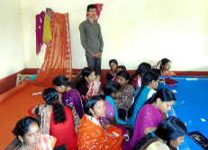
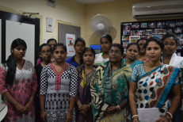

- Our Projects
Varosha has a number of new and ongoing projects. Hover over the projects listed below for more details:
A fully equipped center that provides free vocational training is successfully running in the impoverished districts of Kolkata, Bardhaman, Rajpur/ Sonarpur, Thakurpukur,Goragacha and Birbhum. The participation rate of this school has increased significantly, and it is even drawing participants from other surrounding slums.
Varosha even provides stipends to students who otherwise would be unable to participate. These students were previously working in menial labor jobs for small pay, but were so reliant on this income that they could not leave their jobs for further training. Varosha provides them with stipends that enable them to meet their living expenses while they are being trained.
The school now offers a “Second-level Advanced Training Program,” through which students can become “Master Tailors” in order to continue improving their professional opportunities. The school has already trained many students who are now gainfully employed and self-sufficient. Moreover, the school serves as a center where community members can seek support from fellow students and teachers, and look forward to a better future.
Sucess Stories
Sharmila Singh, Soma Das, and Pampa Das: In just three months (April - June 2007), these three girls have learned how to make garments such as blouses, salwar kameez, petticoats, and pants. They are fully trained and are now earning enough money each month to support their families. They have joined a large group of successful ladies of Ajanta Basti who have already significantly improved their families’ earnings.
This school has inspired and excited many younger-generation participants, and is running at full capacity. Many students who have been trained are already employed and are contributing much-needed income to their families. More importantly, there is always an air of hope and positivity within the school-walls, and the classes provide a healthy break from the hardships of everyday life for these young girls. The girls are learning various cosmetology specialties, including hair removal, manicures, pedicures, bleaching, facials and massages, and make-up (including Indian bridal make-up).
The villages near Bamchandipur, Bardhaman are among the poorest areas in West Bengal. These areas had traditionally been farm working communities before the land was put to other uses by foreign corporations. The locals are now devastated by poverty, lack of education, and a lack of any vocational skills. Their lack of employment is not only hurting their own future, but robbing their childrens’ futures as well. While their mothers and fathers leave the villages to look for work in nearby cities, the older children are forced to drop out of school and watch their younger siblings at home. Few of the village’s children regularly attend school.
VAROSHA will help break this vicious cycle by providing a meaningful profession to the girls and women of the village. VAROSHA has launched one of its most challenging projects -- called JORIR ALO (Light of the metal threads) -- to train village girls and women in metal thread-work on fabrics. VAROSHA arranged all of the necessary financial and logistical support for this project, from conception to completion. VAROSHA provided step-by-step guidance and support, allowing its local partners to start the project within three months of conception.

The training will allow each and every trained woman to earn a wage that can provide a decent living for her family. They will be able to pass their trade along to their children, making the vocation sustainable for future generations. Importantly, the project will allow the women to stay in their own village and allow their older children to attend school. And not to be overlooked, VAROSHA provides full nutritious meals to the women during their training.
VAROSHA is expecting at least 60-70 families to start earning a decent wage each year. They may not become rich, but they will be able to provide three square meals, a decent place to live, and the opportunity to earn an education to their children. This will have a tremendously positive impact in these villages. Varosha has replicated the same model in Sonarpur-Rajpur area under "Sonar-alo" project. 30 women are becoming economically self-sufficient every 6 months through this trade.Similar effort in Nagra village in Bardhaman is preparing 20 women in same trade.
Varosha-trained women are now manufacturing clothing for different vendors. Varosha is providing all necessary costs for raw materials, supplies, and other support.
During October 2007, Varosha successfully launched its most challenging program to date, VIJOY (Varosha In a Journey Of Yours), which helps women become truly self-sufficient by starting their own enterprises. Through its Jori work, Embroidery, Mechanized Embroidery Beautician, Tailoring schools, Mushroom cultivation, and Aqua/Poly Culture Varosha trains impoverished women to become certified tailors and beauticians. Through VIJOY, Varosha provides these women with financial and operational assistance to help them start their own tailoring and beautician enterprises. To date, thirteen VIJOY participants have started their own enterprises. Varosha provides capital, and helps the women develop budgets, timelines, and benchmark goals. Varosha’s hope is that these women will become completely independent owners of their own businesses.
This project is not a handout. Varosha provides financial assistance through interest-free loans, and expects all program participants to honor the terms of those loans. When the VIJOY participants become self-sufficient and repay their loans, Varosha will redistribute these funds to a new group of participants.
Varosha is thus uniquely positioned as a provider of “end-to-end support”: it not only trains participants, but also helps them start their own enterprises.
Vijoy has created a renewed sense of excitement in the slum. The women are now looking towards the future with hope and optimism. This is the first time that they have been recognized as dependable and productive members of society.
Varosha is fully funding a computer school in Behala, Kolkota, in order to provide participants with a working knowledge of this “must-know” subject. Prajukti focuses on the children of the slum, who are falling behind in formal schools because they have no computer access or training like their more affluent peers. The center also accepts students who are not yet attending formal schools, to make sure that they have the skills to allow them to compete with more affluent children from Day 1 of their schooling.
Varosha has always believed in providing a clean and wholesome environment for the participants of its programs.
Under the umbrella of "Paribesh," Varosha provided bathroom facilities in its community center, and throughout 2008 will fund repairs to the roof of the community center. Through these projects, Varosha is providing regular employment for 10 locals of the slum:
Coordinator: 1 (must be a son/daughter of the soil)
Cleaner/Sweeper/guard: 1 (must be a son/daughter of the soil)
Tailoring teacher: 2 (Local)
Beautician teacher: 1 (Local)
After school Tutorial teacher: 3 (Local)
Computer teacher: 1 (Local)
Nutrition support: 1 (Local)
This project has created enormous excitement among our clients. It includes 4 sub-projects.
Tutorial for slum children: Slum children are getting formal academic training in three subjects -- Math, English, and Science -- by qualified full time teachers that are hired and paid by Varosha. The program provides full-service academic support between 2 pm and 10 pm.
Computer training:  Varosha operates and finances two computer-training programs, one for high school students and one for younger children. Varosha has hired a full-time qualified teacher to run the program, which now has 50 students.
Varosha operates and finances two computer-training programs, one for high school students and one for younger children. Varosha has hired a full-time qualified teacher to run the program, which now has 50 students.
Spoken English for high school students: This self-explanatory value-added program is organized, operated, and paid for by Varosha to help students get along in the outside world
Nutrition / meal program: All participants of the tutorial programs are provided with nutritious and substantial food as a mid-day meal. The meals are paid for by Varosha and prepared and delivered by local residents.
Varosha launched this unique program during the “festival” periods of 2007 as a way for Varosha participants to “earn as they learn.” Members of Varosha’s beautician school designed and developed beautician kits, which they used for in-home beautician services during the major Indian festival periods. The success of this project has continued even after the festival periods have ended, and the participants continue to “earn as they learn.”
10 women have started making hand bags out of fabric materials. Following the local art form of the area, bags will have beautiful thread work on them. VAROSHA is providing end to end all necessary support to start this project.
On February 5th, 2011, Varosha launched ‘Sonar Alo ‘project in the village of Kumrokhali under Sonarpur –Rajpur municipality.
It is a fully equipped center to support multi-faceted projects in Sonarpur / Rajpur municipality area. 55 ladies will learn three different trades to make significant changes in their lives.
 Along with regular Jori work, thread & needle work, print & coloring work on fabrics etc that VAROSHA knows & understands so well,
Kumrokhali will have an innovative Pasta/noodle making plant that will teach, train & eventually transfer the ownership of a Pasta-making plant to 25 Kumrokahli ladies.
Along with regular Jori work, thread & needle work, print & coloring work on fabrics etc that VAROSHA knows & understands so well,
Kumrokhali will have an innovative Pasta/noodle making plant that will teach, train & eventually transfer the ownership of a Pasta-making plant to 25 Kumrokahli ladies.
Nothing of this nature ever happened to this part of the country.
Following its long standing tradition, VAROSHA named the project ‘SONAR ALO’ (Aura of gold)
Under this banner, VAROSHA launched three successful projects in Thakurpukur, Natunpara (New Alipore Basti) and in Goragacha. In Thakurpukur a Jori training center with its appropriate business center has been established with 25 disadvantaged women and girls. Center is running with its better than expected success. In Goragacha Basti, VAROSHA established a tailoring and mechanized Embroidery training center. 25 local girls are learning and getting support in running their individual effort in making money. In Natun Para, a Tailoring center has been established to develop 20 disadvantaged local girls
This innovative effort of VAROSHA prepares 30 Sex-workers in two centers in Kolkata to be able to return to the society with an acceptable profession that they can sustain. VAROSHA’s effort has already placed 10 women back in to the normal life . VAROSHA has two centers, one in Jagatpur and other in Salt lake. Tailoring and Mechanized Embroidery is the basic focus in these two center.
Varosha has organized and initiated Mushroom cultivation in ‘Adibashi’ & ‘backward’ villages of Birbhum District of W Bengal. 150 village families have signed-up & 50 of them have started cultivation and harvesting. This project allows all participating families to start earning money within 60 days of starting the work. Varosha has established a laboratory to maintain the appropriate ongoing preparation seeds. Two seed technicians are already working toward starting of the distribution of appropriate seeds, fertilizers & necessary supports. Varosha has established contract with experts to provide ongoing advices & helps as needed. Work will start in June. Alor sparsha project has two smaller project in two villages in the same area.
10 women have started a Kantha stich work ( Birbhum is famous for that) project with 10 women. VAROSHA is providing ‘end to end’ all necessary support to run this project.
Partnering with Debananda Ashram in Nagra Village of Bardhaman, VAROSHA started a new learning center for this part of West Bengal. Plan is to prepare most 1200 disadvantaged women of this community within a shortest period of time and then sustain an ongoing training center. Primary focus is on Fabrics and Metal thread work. ”
A Tutorial and learning center under the banner of ’ VAROSHA-Dipto Alo’ is preparing 30 slum children to appropriately enter the modern and healthy world. This center prepares them in English, Computer and Math. Dipto Alo provides nutritional support to each children as they come to the center each day.
VAROSHA ‘s Aranyer Alo project has brought economic benefits and hope to the villages of Sonakhali and Khulna in Basanti area, which is in Sunderban, South 24 Pargana,
W Bengal.Objective of this project is to improve and sustain the economic development through productive and improved utilization of existing resource in these remote locations.
Neglected land and marshes that were not suitable for proper farming are being converted by local villagers for fish farming and selective agriculture through organized planning, training and support from VAROSHA in partnership with HVR.
Several new plots have been converted to fish farms. New plans and initiatives are in place to convert unused and unproductive lands to be productive and be value added assets.
 Banks of the ponds, that were left unproductive before, are being utilized to grow environmentally hardy vegetables, and to raise ducks and goats.
Training plan and learning continuum are in place to focus on productive and safe utilization of total environment.
Harvesting of fish and produce has already started and VAROSHA beneficiaries have begun to see financial returns on their efforts.
Banks of the ponds, that were left unproductive before, are being utilized to grow environmentally hardy vegetables, and to raise ducks and goats.
Training plan and learning continuum are in place to focus on productive and safe utilization of total environment.
Harvesting of fish and produce has already started and VAROSHA beneficiaries have begun to see financial returns on their efforts.
Jibon Alo is a Children Academy in Natun Para (New Alipore slum), Kolkata, W Bengal.
Objective of this effort is to train and initiate finer aspects of life to the children of these challenged communities.
This academy teaches performing arts like: singing, dancing, acting, and creative arts like: painting, drawing, craft-work to disadvantaged slum kids.VAROSHA believes in these learnings and also believes that these are equally important to be a successful individual as they grow up.
It is inspiring to see the children discover their hidden talents and compete with children from affluent communities in festivals and competitions and win awards and accolades.
This is one of the newest projects under VAROSHA efforts, however, word of its success has spread over the area and requests are pouring in to initiate similar efforts in other challenged communities.
This is a unique and newest initiative under the partnership and leadership of VAROSHA and HVR in the area of ‘Health-Care professional training’.
Objective of this project is to prepare and train individuals from disadvantaged community to deliver general end to end Healthcare support to elderly, sick and not so fit individuals at a reasonable cost of services in greater Kolkata area.
The theme of the training is in basic physiology and anatomy, general illness areas of maternal, child and old age care, care during pregnancy and post-partum, nursing communication, measurement of blood pressure, measurement of temperature, dressing, administering medications, antiseptic dressing, nutrition and Physiotherapy supports.
Six months of training will train individuals to be skilled enough to do these basic tasks and satisfy the need of the customers.

Candidates will have 3 months in-house and 3 months hands-on training in assigned hospitals.
At this moment, 15 selected individuals are going through the training.
© 2015 VAROSHA.ORG Varosha is a registered not-for-profit philanthropic organization with tax exempt status under not-for-profit laws.